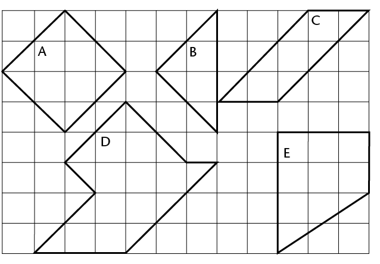
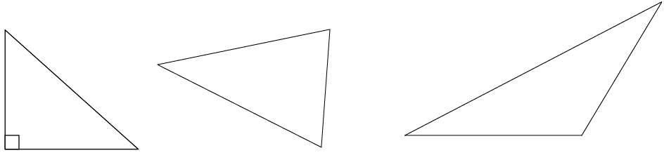

Perimeter and area of shapes
You will remember from Grade 6 that perimeter is the distance around the outermost border of something. Area is the size of a flat surface of something. In this chapter, you will learn to use different formulae to calculate the perimeter and area of squares, rectangles and triangles. You will solve problems using these formulae, and you will also learn how to convert between different units of area.
Perimeter of polygons
The perimeter of a shape is the total distance around the shape, or the lengths of its sides added together. Perimeter (P) is measured in units such as millimetres (mm), centimetres (cm) and metres (m).
Measuring perimeters
-
-
Use a compass and/or a ruler to measure the length of each side in figures A to C. Write the measurements in mm on each figure.
-
Write down the perimeter of each figure.

-
-
The following shapes consist of arrows that are equal in length.
-
What is the perimeter of each shape in number of arrows?
-
If each arrow is 30 mm long, what is the perimeter of each shape in mm?


-
Perimeter formulae
If the sides of a square are all \(s\) units long:
\[\begin{align} \textbf{Perimeter of square} &= s+ s+s+s\\ &= 4 \times s\\ \text{or } P &= 4s\end{align}\]

If the length of a rectangle is \(l\) units and the breadth (width) is \(b\) units:
\[\begin{align} \textbf{Perimeter of rectangle} &= l+l+b+b\\ &=2\times l + 2 \times b\\ \text{or } P&=2(l+b) \end{align}\]
A triangle has three sides, so:
\[\begin{align} \textbf{Perimeter of triangle } &= s_1 + s_2 + s_3\\ \text{or } P &= s_1 + s_2 + s_3 \end{align}\]

Applying perimeter formulae
-
Calculate the perimeter of a square if the length of one of its sides is 17,5 cm.
-
One side of an equilateral triangle is 32 cm. Calculate the triangle's perimeter.
-
Calculate the length of one side of a square if the perimeter of the square is 7,2 m. (Hint: \(4s\ =\) ? Therefore \(s =\) ?)
-
Two sides of a triangle are 2,5 cm each. Calculate the length of the third side if the triangle's perimeter is 6,4 cm.
-
A rectangle is 40 cm long and 25 cm wide. Calculate its perimeter.
-
Calculate the perimeter of a rectangle that is 2,4 m wide and 4 m long.
-
The perimeter of a rectangle is 8,88 m. How long is the rectangle if it is 1,2 m wide?
-
Do the necessary calculations in your exercise book in order to complete the table. (All the measurements refer to rectangles.)
Length
Breadth
Perimeter
(a)
74 mm
30 mm
(b)
25 mm
90 mm
(c)
1,125 cm
6,25 cm
(d)
5,5 cm
22 cm
(e)
7,5 m
3,8 m
(f)
2,5 m
12 m
Area and square units
The area of a shape is the size of the flat surface surrounded by the border (perimeter) of the shape.
Usually, area (A) is measured in square units, such as square millimetres (mm2), square centimetres (cm2) and square metres (m2).
Square units to measure area
-
Write down the area of figures A to E below by counting the square units. (Remember to add halves or smaller parts of squares.)
A is ______ square units.
B is ______ square units.
C is ______ square units.
D is ______square units.
E is ______ square units.
-
Each square in the grid below measures 1 cm2 (1 cm \(\times\) 1 cm).
-
What is the area of the shape drawn on the grid?
-
On the same grid, draw two shapes of your own. The shapes should have the same area, but different perimeters.

-
Conversion of units
The figure below shows a square with sides of 1 cm.The area of the square is one square centimetre (1 cm2).
How many squares of 1 mm by 1 mm (1 mm2) would fit into the 1 cm2 square? ______ Complete: 1 cm2 = _______ mm2
To change cm2 to mm:2
1 cm=2 1 cm \(\times\) 1 cm
= 10 mm \(\times\) 10 mm
= 100 mm2
Similarly, to change mm2 to cm2:
1 mm2 = 1 mm \(\times\) 1 mm
= 0,1 cm \(\times\) 0,1 cm
= 0,01 cm2
We can use the same method to convert between other square units too. Complete:
|
From m2 to cm2: \[ \begin{align} 1 \text {m}^2 &= 1 \text{ m} \times 1 \text{ m} \\ &=\text{______ cm} \times \text{______ cm}\\ &=\text{______ cm}^2 \end{align}\] |
From cm2 to m2: \[ \begin{align} 1 \text {cm}^2 &= 1 \text{ cm} \times 1 \text{ cm} \\ &=0.01 \text{ m} \times 0.01\text{ m}\\ &=\text{______ m}^2 \end{align}\] |
So, to convert between m2, cm2 and mm2 you do the following:
- cm2 to mm2 \(\rightarrow\) multiply by 100
- m2 to cm2 \(\rightarrow\) multiply by 1000
- mm2 to cm2 \(\rightarrow\) divide by 100
- cm2 to m2 \(\rightarrow\) divide by 10000
Do the necessary calculations in your exercise book. Then fill in your answers.
-
- 15 m2 = ______ cm2
- 5 cm2 = ______ mm2
- 20 cm2 = ______ m2
- 20 mm2 = ______ cm2
-
- 25 m2 = ______ cm2
- 240 000 cm2 = ______ m2
- 460,5 mm2 = _______ cm2
- 0,4 m2 = ______ cm2
- 12 100 cm2 = ______ m2
- 2,295 cm2 = ______ mm2
Area of squares and rectangles
Investigating the area of squares and rectangles
-
Each of the following four figures is divided into squares of equal size, namely 1 cm by 1 cm.

-
Give the area of each figure in square centimetres (cm2):
Area of A:
Area of B:
Area of C:
Area of D:
-
Is there a shorter method to work out the area of each figure? Explain.
-
-
Figure BCDE is a rectangle and MNRS is a square.

-
How many cm2 (1 cm \(\times\) 1 cm) would fit into rectangle BCDE?
-
How many mm2 (1 mm \(\times\) 1 mm) would fit into rectangle BCDE?
-
What is the area of square MNRS in cm2?
-
What is the area of square MNRS in mm2?
-
-
Figure KLMN is a square with sides of 1 m.

-
How many squares with sides of 1 cm would fit along the length of the square?
-
How many squares with sides of 1 cm would fit along the breadth of the square?
-
How many squares (cm2) would therefore fit into the whole square?
-
Complete: 1 m2 = ______ cm2
-
A quick way of calculating the number of squares that would fit into a rectangle is to multiply the number of squares that would fit along its length by the number of squares that would fit along its breadth.
Formulae: area of rectangles and squares
In the rectangle on the below: \[ \begin{align} \text{Number of squares} &= \text{Squares along the length} \times \text{Squares along the breadth} \\ &= 6 \times 4 \\ &= 24 \end{align}\]

From this we can deduce the following:
\[ \begin{align} \textbf{Area of rectangle} &= \text{Length of rectangle} \times \text{Breadth of rectangle}\\ A &= l \times b\end{align}\] where \(A\) is the area in square units, \(l\) is the length and \(b\) is the breadth)
\[ \begin{align} \textbf{Area of square} &= \text{Length of side} \times \text{Length of side}\\ A &= l \times l \\ &=l^2 \end{align} \] where \(A\) is the area in square units, and \(l\) is the length of a side)
The units of the values used in the calculations must be the same. Remember:
- 1 m = 100 cm and 1 cm = 10 mm
- 1 cm2 = 1 cm \(\times\) 1 cm = 10 mm \(\times\) 10 mm = 100 mm2
- 1 m2 = 1 m \(\times\) 1 m = 100 cm \(\times\) 100 cm = 10 000 cm2
- 1 mm2 = 1 mm \(\times\) 1 mm = 0,1 cm \(\times\) 0,1 cm = 0,01 cm2
- 1 cm2 = 1 cm \(\times\) 1 cm = 0,01 m \(\times\) 0,01 m = 0,0001 m2
Examples
-
Calculate the area of a rectangle with a length of 50 mm and a breadth of 3 cm. Give the answer in cm2.
Solution:
\[ \begin{align} \text{Area of rectangle} & = l \times b & & &\\ &= (50 \times 30) \text{ mm}^2& \text{ or } A &= (5 \times 3)\text{ cm}^2\\ &= 1 500 \text{ mm}^2 & \text{ or } & = 15 \text{ cm}^2 \end{align} \] -
Calculate the area of a square bathroom tile with a side of 150 mm.
Solution: \[ \begin{align} \text{Area of square tile} &= l \times l \\ &=(150 \times 150) \text{ mm}^2\\ &= 22500\text{ mm}^2\\ \end{align}\]
The area is therefore 22 500 mm2 (or 225 cm2).
-
Calculate the length of a rectangle if its area is 450 cm2 and its width is 150 mm.
Solution: \[ \begin{align} \text{Area of rectangle} & = l \times b & & &\\ 450 &= l \times 15 & & &\\ 30 \times 15 &= l \times 15 & \text{ or } 450 \div 15& = l\\ 30 = l & & 30 &= l\\ \end{align} \]
The length is therefore 30 cm (or 300 mm).
Applying the formulae
-
Calculate the area of each of the following shapes:
-
a rectangle with sides of 12 cm and 9 cm
-
a square with sides of 110 mm (answer in cm2)
-
a rectangle with sides of 2,5 cm and 105 mm (answer in mm2)
-
a rectangle with a length of 8 cm and a perimeter of 24 cm
-
-
A rugby field has a length of 100 m (goal post to goal post) and a breadth of 69 m.
-
What is the area of the field (excluding the area behind the goal posts)?
-
What would it cost to plant new grass on that area at a cost of R45/m2?
-
Another unit for area is the hectare (ha). It is mainly used for measuring land. The size of 1 ha is the equivalent of \( 100 \text{m} \times 100 \text{m}\). Is a rugby field greater or smaller than 1 ha? Explain your answer.
-
-
Do the necessary calculations in your exercise book in order to complete the table. (All the measurements refer to rectangles.)
Length
Breadth
Area
(a)
m
8 m
120 m2
(b)
120 mm
mm
60 cm2
(c)
3,5 m
4,3 m
m2
(d)
2,3 cm
cm
2,76 cm2
(e)
5,2 m
460 cm
m2
-
Figure A is a square with sides of 20 mm. It is cut as shown in A and the parts are combined to form figure B. Calculate the area of figure B.

-
Margie plants a vegetable patch measuring \(12 \text{m} \times 8 \text{m}\).

-
What is the area of the vegetable patch?
-
She plants carrots on half of the patch, and tomatoes and potatoes on a quarter of the patch each. Calculate the area covered by each type of vegetable?
-
How much will she pay to put fencing around the patch? The fencing costs R38/m.
-
-
Mr Allie has to tile a kitchen floor measuring \(5 \text{m} \times 4 \text{m}\). The blue tiles he uses each measure \(40 \text{cm} \times 20 \text{cm}\).
-
How many tiles does Mr Allie need?
-
The tiles are sold in boxes containing 20 tiles. How many boxes should he buy?
-
Doubling a side and its effect on area
When a side of a square is doubled, will the area of the square also be doubled?
The size of each square making up the grid below is \(1 \text{cm} \times 1 \text{cm}\).
-
-
For each square drawn on the grid, label the lengths of its sides.
-
Write down the area of each square. (Write the answer inside the square.)
-
-
Notice that the second square in each pair of squares has a side length that is double the side length of the first square.
-
Compare the areas of the squares in each pair; then complete the following: When the side of a square is doubled, its area

Area of triangles
Heights and bases of a triangle
The height (h) of a triangle is a perpendicular line segment drawn from a vertex to its opposite side. The opposite side, which forms a right angle with the height, is called the base (b) of the triangle. Any triangle has three heights and three bases.

In a right-angled triangle, two sides are already at right angles:

Sometimes a base must be extended outside of the triangle in order to draw the perpendicular height. This is shown in the first and third triangles below. Note that the extended part does not form part of the base's measurement:

-
Draw any height in each of the following triangles. Label the height (h) and base (b) on each triangle.
-
Label another set of heights and bases on each triangle.

Formula: area of a triangle
ABCD is a rectangle with length = 5 cm and breadth = 3 cm. When A and C are joined, it creates two triangles that are equal in area: \(\triangle ABC\) and \(\triangle ADC\).

\(\text{Area of rectangle} = l \times b\)
\[ \begin{align} \text{Area of } \triangle ABC \text{ (or } \triangle ADC\text{)} &= \frac{1}{2} \text{(Area of rectangle)}\\ &= \frac{1}{2}(l \times b) \end{align} \]
In rectangle ABCD, AD is its length and CD is its breadth.
But look at \(\triangle ADC\). Can you see that AD is a base and CD is its height?
So instead of saying:
Area of \(\triangle ADC\) or any other triangle \(= \frac{1}{2}(l \times b)\)
we say:
In the formula for the area of a triangle, b means 'base' and not 'breadth', and h means perpendicular height.
Applying the area formula
-
Use the formula to calculate the areas of the following triangles: \(\triangle ABC\), \(\triangle EFG\), \(\triangle JKL\) and \(\triangle MNP\).


-
PQST is a rectangle in each case below. Calculate the area of \(\triangle PQR\) each time.


-
R is the midpoint of QS.

-
In \(\triangle ABC\), the area is 42 m2, and the perpendicular height is 16 m. Find the length of the base.
-
Calculate the perimeter (P) and area (A) of the following figures:

P=_______
A=________

P=_______
A=________

P=_______
A=________
-
Figure ABCD is a rectangle: AB = 3 cm, AD = 9 cm and TC = 4 cm.

-
Calculate the perimeter of ABCD.
-
Calculate the area of ABCD.
-
Calculate the area of \(\triangle DTC\).
Calculate the area of ABTD.
-